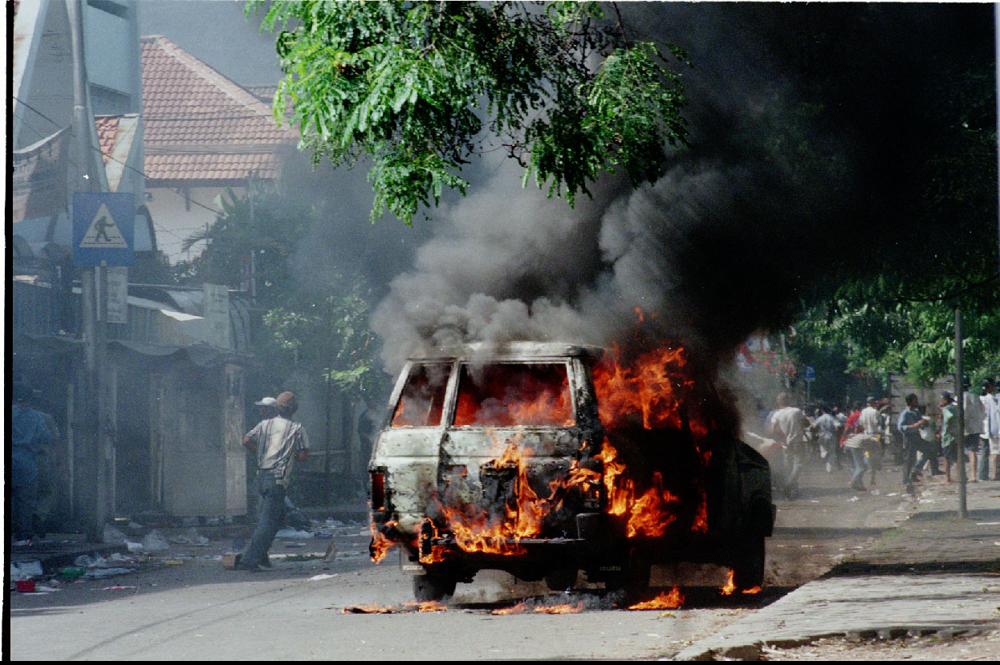
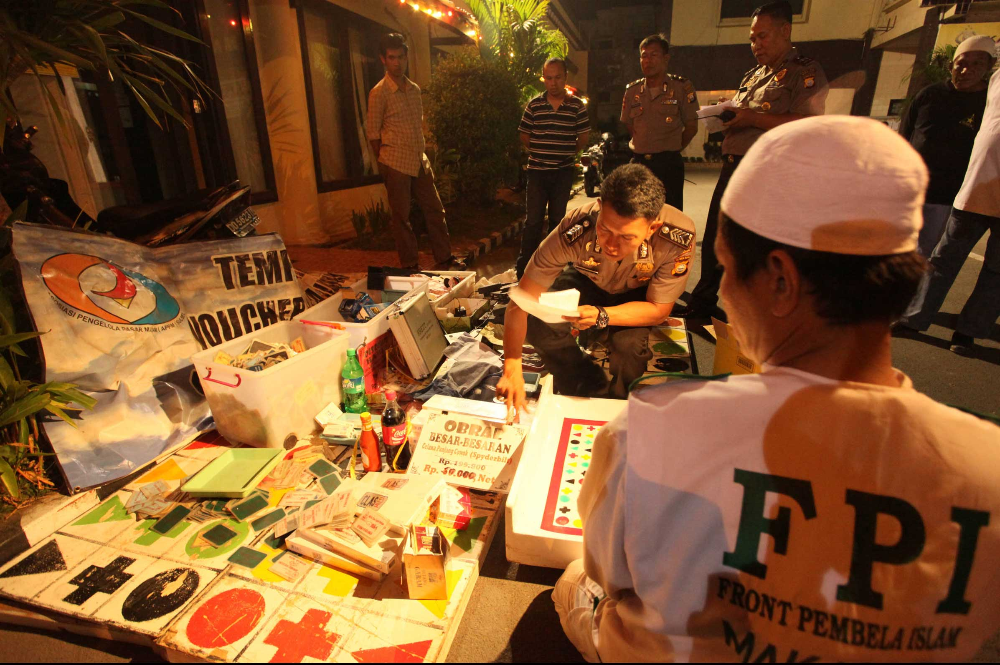
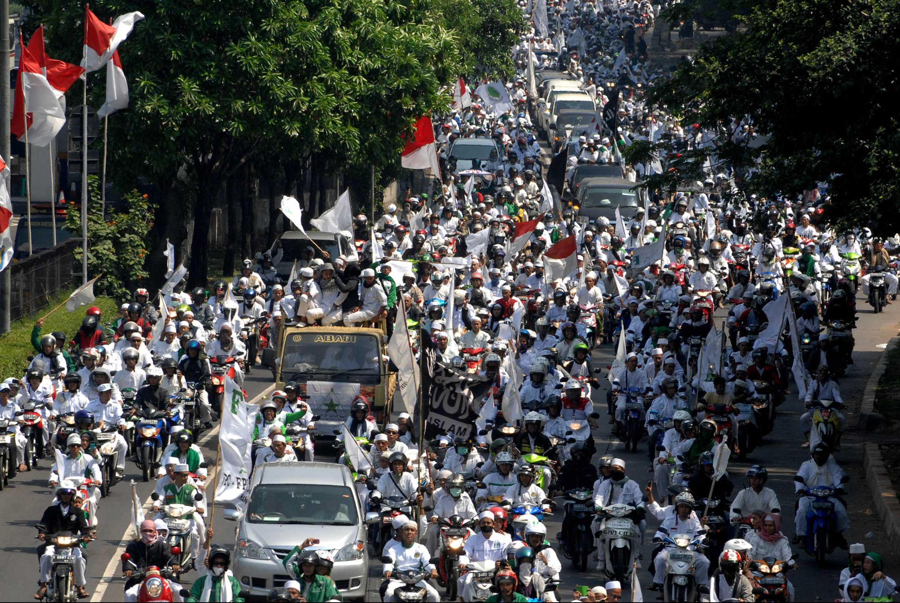
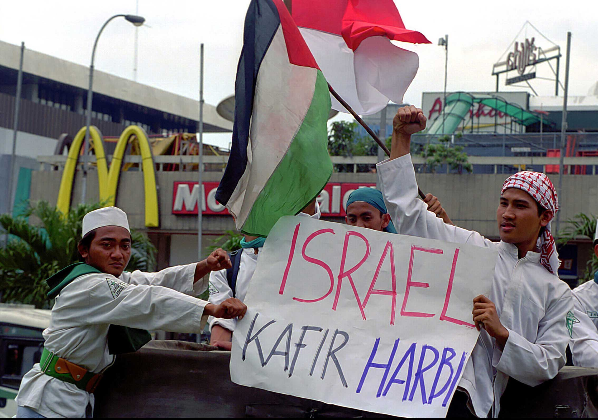
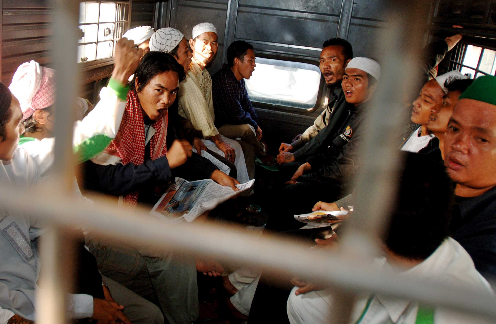
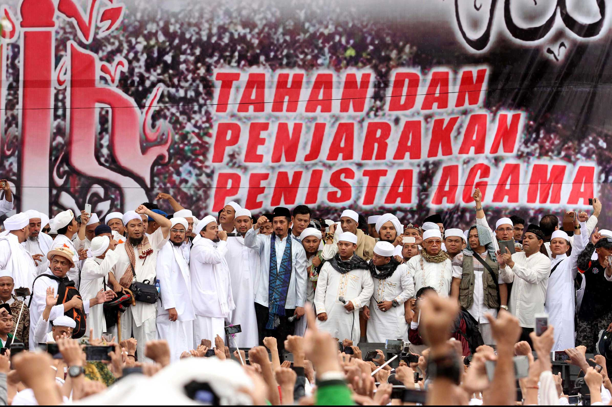
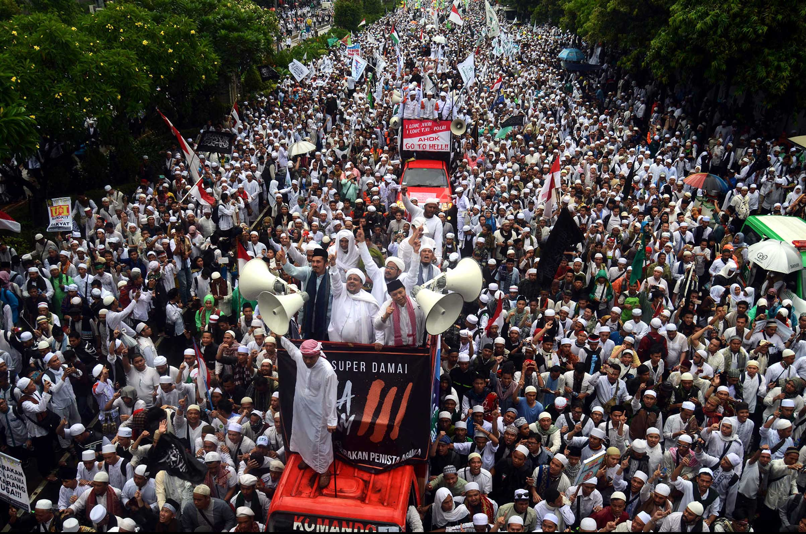
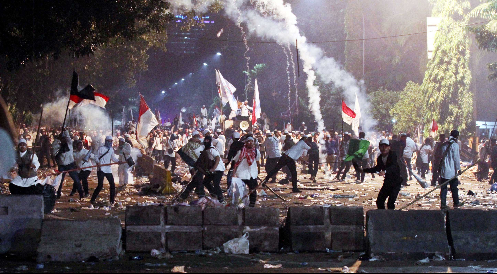
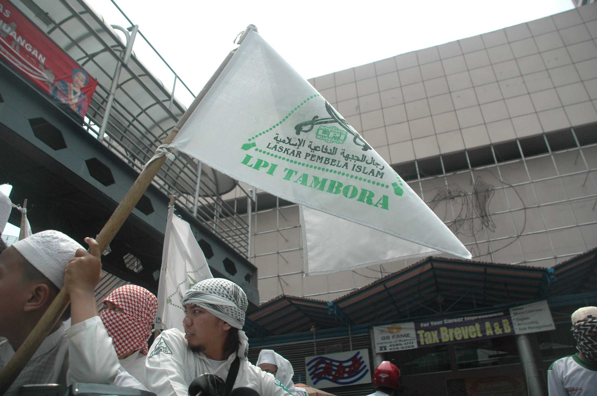
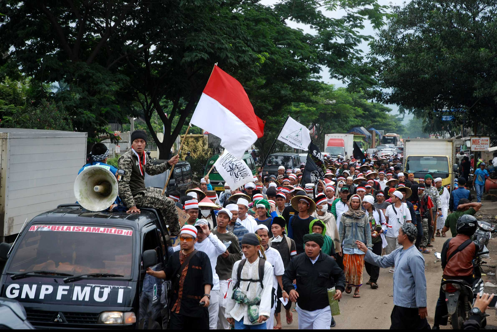

Aksi diwarnai dengan perkelahian dengan kurang lebih 600 orang preman yang diduga berasal dari Ambon. Kejadian bermula dari berita mengenai perusakan sebuah masjid di daerah Ketapang, Gajah Mada, Jakarta Pusat. Mendengar berita ini, FPI meninjau daerah tersebut dan berkelahi dengan para preman yang diduga sebagai perusak.
22 November 1998
13, 18 & 22 September 1998
12 Desember 1998
11 Oktober 2000
1 Juni 2000
2 Desember 2016
2 Desember 2019
10 Mei 2019
9 Januari 2020
4 Februari 2020

Mobil yang dibakar saat kerusuhan di Jl. Ketapang, Jakarta, 22 November 1998. [TEMPO/ Rini PWI; 26d/099/99; 990305].
22 November 1998

Seorang anggota Front Pembela Islam (FPI) menggelar barang bukti alat judi ketangkasan usai melakukan razia di halaman Polrestabes Makassar, Minggu (7/10) dini hari. TEMPO/Fahmi Ali
13, 18 dan 22 September 1998
Laskar Pembela Islam berunjuk rasa pada September 1999, dengan menutup tempat perjudian di Petojo Utara dan tempat pelacuran di Ciputat, Tanah Abang, Jakarta. Dan menutup diskotik Indah Sari, Tanah Abang, Jakarta.

Ribuan massa Front Pembela Islam (FPI) melakukan konvoi di Jalan Gatot Subroto, Jakarta, Minggu, 25 Agustus 2013. FPI menggelar konvoi keliling Jakarta untuk merayakan ulang tahunnya yang ke-15. [TEMPO/STR/Dasril Roszandi; DS2013082539]
12 Desember 1998
FPI menduduki Gedung Balai Kartini Jakarta selama 13 jam untuk menuntut penutupan tempat hiburan selama bulan suci Ramadhan dan minggu pertama Syawal.

Protes anti Israel oleh Front Pembela Islam (FPI) dengan membentangkan poster "Israel Kafir Harbi" dan mengibarkan bendera Palestina serta bendera merah putih di depan Gedung PBB, Jakarta, 4 April 2002. [TEMPO/ Arif Ariadi; K8A/042/2002; 20020620].
11 Oktober 2000
FPI berunjuk rasa menolak kedatangan perwakilan dari negara Israel yang memiliki latar belakang Yahudi untuk menghadiri konferensi Inter-Parliamentary Union ke-104 di Jakarta. Massa FPI membawa spanduk yang berisikan penolakan perwakilan Israel tersebut yang berbunyi, “Haram, Yahudi menginjakkan kaki di bumi Indonesia,” Selain itu juga ada spanduk yang bernada ancaman yaitu “Israel datang kami bantai,” dan juga "Tolak delegasi imperialis Israel,".

Puluhan anggota Front Pembela Islam (FPI) di dalam mobil tahanan polisi untuk dibawa ke Markas Polda Metro Jaya, setelah ditangkap di Jln. Petamburan III, Tanah Abang, Jakarta Pusat, Rabu, 4 Juni 2008. [TEMPO/ Amston Probel]
1 Juni 2000
Massa FPI menyerang Aliansi Kebangsaan untuk Kebebasan Beragama dan Berkeyakinan (AKK-BB) di Monas. Kala itu massa AKK-BB sedang merayakan hari Pancasila. Sebagian dari massa AKK-BB merupakan ibu-ibu dan anak-anak luka-luka akibat penyerangan ini. Selain itu, FPI juga merusak kendaraan yang terparkir di sekitar lokasi tersebut.

Rizieq Syihab berpidato seusai mengikuti salat Jumat bersama peserta aksi bela Islam III 212 di kawasan Silang Monas, Jakarta Pusat, Jumat, 2 Desember 2016. [TEMPO/STR/M. Iqbal Ichsan; IQ2016120205]
2 Desember 2016
FPI bersama koalisi kelompok Islam lainnya menggelar unjuk pada 2 Desember 2016. Mereka menuntut Calon Gubernur DKI Jakarta Basuki Tjahaja Purnama alias Ahok yang dianggap telah menodakan agama menjadi tersangka. Belakangan, unjuk rasa ini dikenal sebagai gerakan 212.

Imam besar Front Pembela Islam (FPI) Rizieq Syihab dan Wakit Ketua MPR Hidayat Nur Wahid menyapa jutaan umat Islam seusai mengikuti salat Jumat dalam aksi bela Islam III 212 , di kawasan Monas, Jakarta Pusat, 2 Desember 2016. [TEMPO/Imam Sukamto; IS2016120224]
2 Desember 2019
FPI melakukan reuni akbar pada 2 Desember 2019 di Monumen Nasional (Monas) Jakarta. Gubernur DKI Jakarta Anies Baswedan turut hadir dan menjadi tokoh yang sangat dinanti-nantikan oleh massa FPI yang hadir saat itu. Hadirnya Anies di Monas, semua massa menyatakan Anies sebagai Gubernur Indonesia.

Massa terlibat bentrok dengan petugas kepolisian saat unjuk rasa di depan Istana Merdeka, Jakarta Pusat, Jumat, 4 November 2016. [TEMPO/STR/M. Iqbal Ichsan; IQ2016110516]
10 Mei 2019
Unjuk rasa yang dilakukan FPI akan digelar di Badan Pengawasan Pemilu (Bawaslu) pada 10 Mei 2019. Unjuk rasa merupakan bagian dari mengawal aduan Badan Pemenangan Nasional Prabowo Subianto - Sandiaga Uno.

Massa dari Front Pembela Islam melakukan aksi damai dengan konvoi di kawasan tempat hiburan malam Mangga Besar, Jakarta, Minggu, 9 September 2007. [TEMPO/ Fransiskus S.; FR2007090911]
9 Januari 2020
Massa FPI mendesak Presiden untuk memecat Prabowo dari jabatannya sebagai Menteri Pertahanan dikarenakan massa FPI menilai bahwa Prabowo tidak dapat tegas soal konflik dengan Cina di Natuna.

Ribuan santri dari sejumlah pondok pesantren di kawasan Ciamis melakukan long march menuju Jakarta untuk melakukan Aksi Bela Islam III saat melintas di Rancaekek, Kabupaten Bandung, Jawa Barat, Rabu, 30 November 2016. [TEMPO/STR/Prima Mulia; PML2016443001]
4 Februari 2020
Agenda mengenai unjuk rasa massa FPI dan Persaudaraan Alumni (PA) 212, akan dilaksanakan pada 21 Februari 2020 ke DPR. Massa menuntut DPR untuk penuntasan kasus korupsi seperti kasus Jiwasraya.